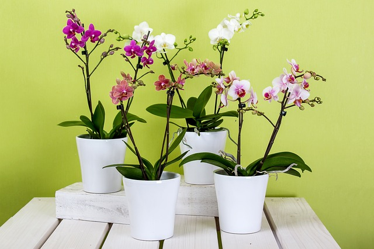

Sobre Juliana Flores
Tudo começou quando surgiu o interesse de Juliana em ter uma orquídea, porém, pesquisando os valores em lojas locais percebeu que arranjos eram muito caros. Nessa época ela estava passando por momentos dificeis na saúde mental e estava sem emprego. Através de sua paixão e a necessidade de um trabalho, Juliana juntou as duas coisas e começou a vender orquídeas. Com isso, a demanda foi aumentando e ela tinha uma grande necessidade de crescer financeiramente. Com apenas 30 reais ela foi até a feira Ceasa e também investiu em rosas, começou a vender na rua, em frente a uma faculdade enfrentando a timidez e preconceito e, nesse mesmo dia, ela foi até a praça do Embu e conseguiu vender todas as rosas. Dia após dia ela encara os desafios que é vender nas ruas de forma positiva, conquistando clientes presencialmente e agora também através da internet!